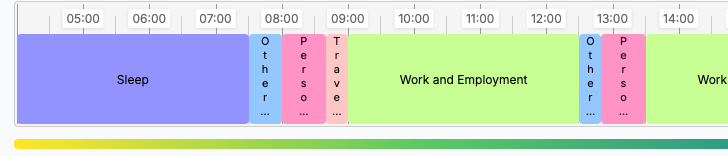
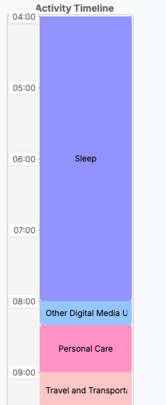

Welcome to the Time Use Diary
Thank you for participating in this research study. This diary will help us collect valuable information about how you spend your time throughout the day.
1
How the Diary Works
The diary shows a full day from 4am to 4am the next day, divided into 10-minute intervals.
On your computer screen, the timeline appears horizontally - scroll left and right to move through the day.
On your phone screen, the timeline appears vertically - scroll up and down to move through the day.
2
Tips for Accurate Recording
- Account for all your time - even short activities matter
- If you did multiple things at once, record the main activity
- Be as specific as possible when choosing activities